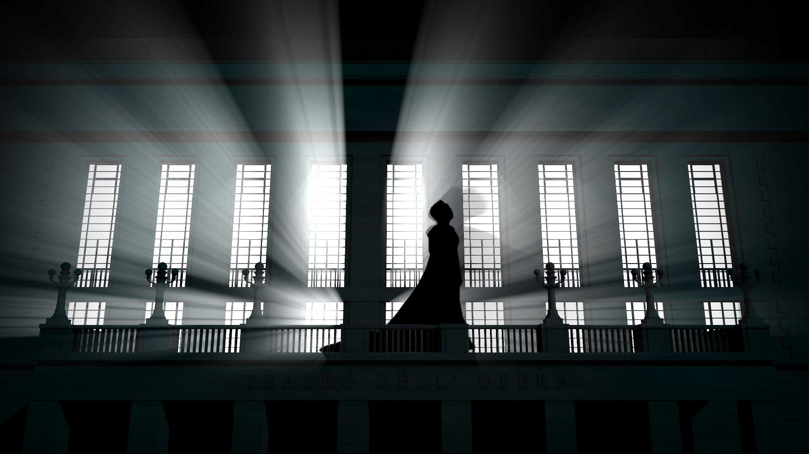
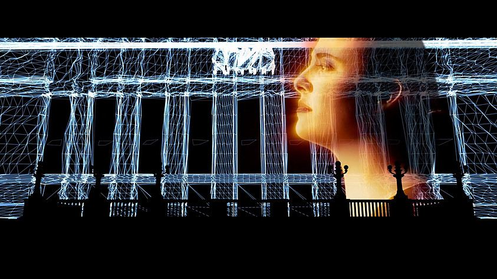
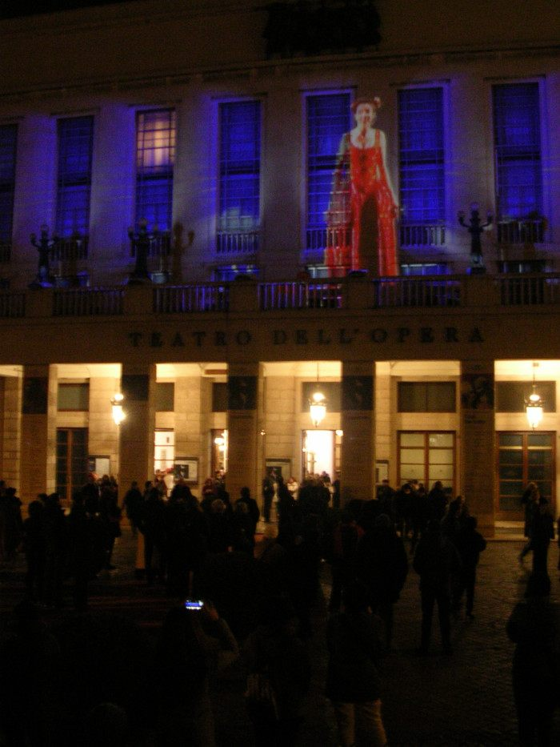
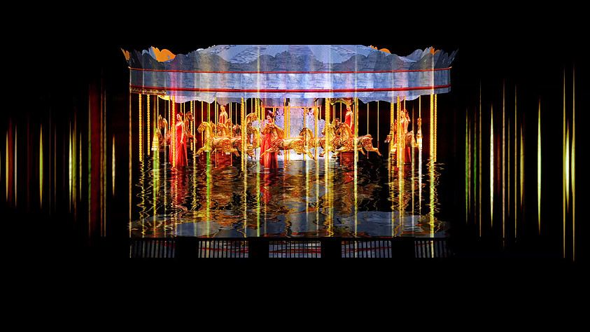
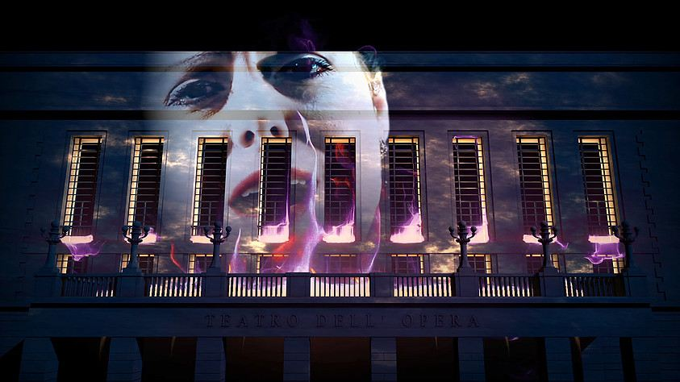
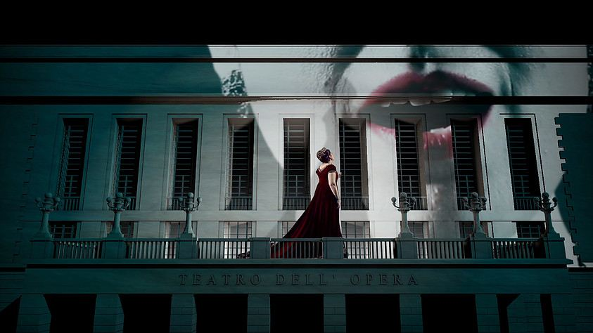
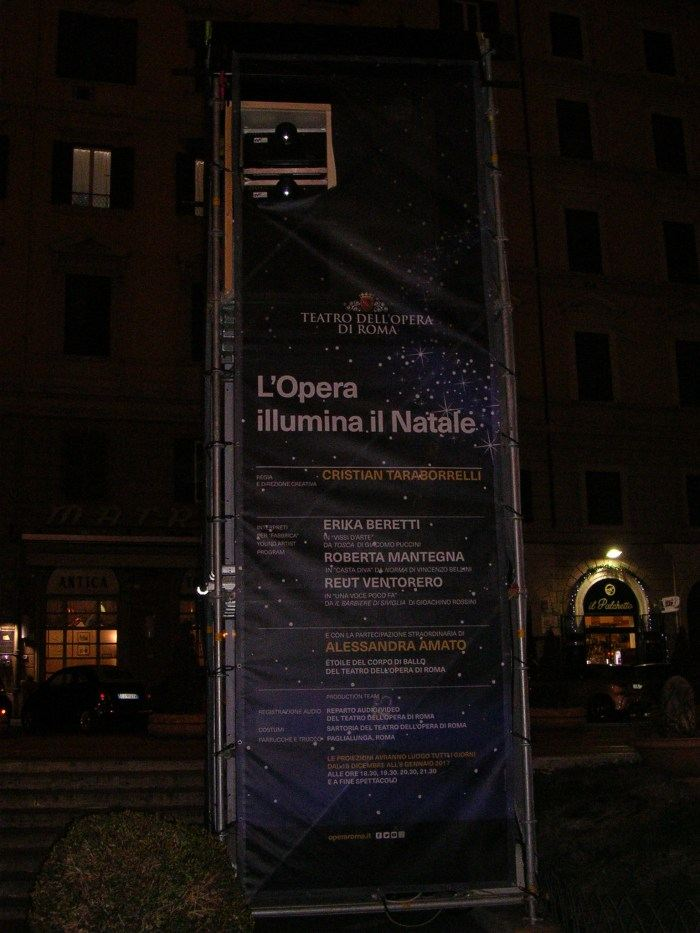
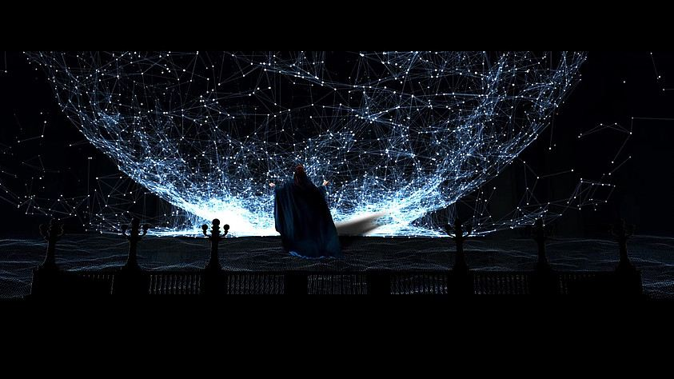
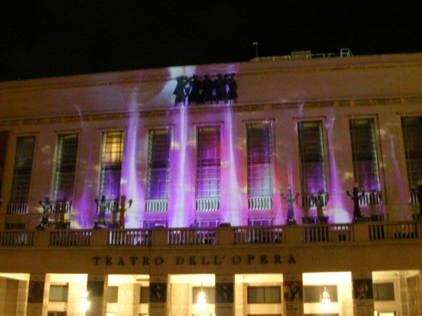

Events · 3D Videomapping · Roma · 2017
L'Opera Illumina il Natale
Teatro dell'Opera di Roma · Teatro Costanzi
Roma, 20 dicembre 2016. Per la prima volta nella storia il Teatro Costanzi apre la propria facciata neoclassica come superficie scenica. Cinque spettacoli al giorno per venti giorni, gratuiti per la città: Bellini, Puccini, Rossini in videomapping 3D, l'étoile Alessandra Amato in danza, i giovani della Factory dell'Opera. Una cerimonia urbana che fa del teatro lirico un fatto di piazza.
Rome, 20 December 2016. For the first time in history the Teatro Costanzi opens its neoclassical façade as a scenic surface. Five performances a day for twenty days, free to the city: Bellini, Puccini, Rossini in 3D videomapping, étoile Alessandra Amato in dance, the young singers of the Opera Factory. An urban ceremony that turns lyric theatre into a public event.
Rome, 20 décembre 2016. Pour la première fois dans l'histoire le Teatro Costanzi ouvre sa façade néoclassique comme surface scénique. Cinq spectacles par jour pendant vingt jours, gratuits pour la ville.
L'Opera Illumina il Natale is a spectacular 3D videomapping show that illuminated the facade of Teatro Costanzi during the Christmas season. Conceived and directed by Cristian Taraborrelli, the project blends opera, architectural projection mapping, and video art into a single breathtaking experience under the Roman sky.
The facade of the Costanzi “pulses” to the notes of celebrated opera arias, performed live by three singers from the Fabbrica Young Artist Program of the Teatro dell'Opera di Roma: soprano Erika Beretti singing “Vissi d'arte” from Puccini's Tosca, soprano Roberta Mantegna with “Casta diva” from Bellini's Norma, and mezzosoprano Reut Ventorero performing “Una voce poco fa” from Rossini's Il barbiere di Siviglia. The video also features the extraordinary participation of Alessandra Amato, étoile of the Theatre's Corps de Ballet.
L'Opera Illumina il Natale è un emozionante spettacolo di videomapping 3D che ha illuminato la facciata del Teatro Costanzi durante il periodo natalizio. Ideato e diretto da Cristian Taraborrelli, il progetto miscela lirica, mapping architetturale e video-arte in un'unica esperienza mozzafiato sotto il cielo di Roma.
La facciata del Costanzi “pulsa” sulle note di celebri arie d'opera, interpretate da tre cantanti del progetto Fabbrica Young Artist Program del Teatro dell'Opera di Roma: il soprano Erika Beretti con “Vissi d'arte” dalla Tosca di Puccini, il soprano Roberta Mantegna con “Casta diva” dalla Norma di Bellini, e il mezzosoprano Reut Ventorero con “Una voce poco fa” da Il barbiere di Siviglia di Rossini. Il video vede anche la partecipazione straordinaria di Alessandra Amato, étoile del Corpo di Ballo del Teatro.
L'Opera Illumina il Natale est un spectaculaire spectacle de vidéomapping 3D qui a illuminé la façade du Teatro Costanzi pendant la période de Noël. Conçu et dirigé par Cristian Taraborrelli, le projet mêle opéra, mapping architectural et vidéo-art en une seule expérience à couper le souffle sous le ciel de Rome.
La façade du Costanzi « pulse » aux notes de célèbres airs d'opéra, interprétés en direct par trois chanteurs du programme Fabbrica Young Artist du Teatro dell'Opera di Roma : la soprano Erika Beretti chantant « Vissi d'arte » de la Tosca de Puccini, la soprano Roberta Mantegna avec « Casta diva » de la Norma de Bellini, et la mezzo-soprano Reut Ventorero interprétant « Una voce poco fa » du Barbier de Séville de Rossini. La vidéo présente également la participation extraordinaire d'Alessandra Amato, étoile du Corps de Ballet du Théâtre.









The concept transforms the austere neoclassical architecture of the Costanzi into a living canvas. The 3D videomapping wraps around columns, windows, and cornices, respecting every architectural detail while reinventing it through light. The building breathes, its surfaces dissolving into operatic worlds — from Tosca's dramatic silhouette against radiating light beams to the ethereal blue of Norma's moonlit temple.
An open-air enchantment of music and art. An initiative that pays homage to opera and anticipates the wonders staged inside the most sumptuous theatre of the Capital. Projections of operas colour the facade and render its austere architecture magnificent with forms and colours.
Il concept trasforma l'austera architettura neoclassica del Costanzi in una tela vivente. Il videomapping 3D avvolge colonne, finestre e cornicioni, rispettando ogni dettaglio architettonico mentre lo reinventa attraverso la luce. L'edificio respira, le sue superfici si dissolvono in mondi operistici — dalla silhouette drammatica di Tosca contro raggi di luce irradianti all'azzurro etereo del tempio illuminato dalla luna di Norma.
Un incantesimo di musica e arte a cielo aperto. Un'iniziativa che omaggia la lirica e anticipa le meraviglie che si inscenano sul palco del teatro più sontuoso della Capitale. Proiezioni di opere che colorano la facciata dell'edificio e rendono la sua architettura austera, sontuosa di forme e colori.
Le concept transforme l'austère architecture néoclassique du Costanzi en une toile vivante. Le vidéomapping 3D enveloppe colonnes, fenêtres et corniches, respectant chaque détail architectural tout en le réinventant par la lumière. Le bâtiment respire, ses surfaces se dissolvent dans des mondes opératiques — de la silhouette dramatique de Tosca contre des faisceaux lumineux au bleu éthéré du temple éclairé par la lune de Norma.
Un enchantement de musique et d'art à ciel ouvert. Une initiative qui rend hommage à l'opéra et anticipe les merveilles mises en scène à l'intérieur du théâtre le plus somptueux de la Capitale.
« L'Opera ha illuminato il Natale di Roma. Concreto esempio delle potenzialità contemporanee delle Arti e delle Culture. » « Opera illuminated Rome's Christmas. A concrete example of the contemporary potential of Arts and Culture. » « L'opéra a illuminé le Noël de Rome. Un exemple concret du potentiel contemporain des Arts et de la Culture. »
— Arte – Teatro · 7 febbraio 2017
« L'Opera illumina il Natale è un incantesimo di musica e arte a cielo aperto. » « L'Opera illumina il Natale is a spell of music and art under the open sky. » « L'Opera illumina il Natale est un enchantement de musique et d'art à ciel ouvert. »
— Stampa · 10 gennaio 2017
« L'Opera apre le porte: emozionanti giochi di luce e musica faranno pulsare Piazza Beniamino Gigli. » « Opera opens its doors: thrilling light and music displays will bring Piazza Beniamino Gigli to life. » « L'Opéra ouvre ses portes : des jeux de lumière et de musique émouvants feront vibrer la Piazza Beniamino Gigli. »
— RomaDaLeggere · 23 dicembre 2016
L'immagine del videomapping su Piazza Beniamino Gigli è stata scelta come copertina del fascicolo monografico di The Scenographer (SCSA London, aprile 2017), la rivista internazionale dedicata alla scenografia teatrale e d'evento, curata da Henning Brockhaus. Il numero, intitolato Theatrical Notebooks — Cristian Taraborrelli e con saggio critico di Bruno Di Marino («Analog Sets and Digital Visions»), è oggi la fonte ufficiale primaria per la cronologia dello studio. La cover scelta non è un caso: L'Opera Illumina il Natale rappresenta il punto di sintesi più alto fra l'estetica analogica della scenografia di tradizione e la grammatica digitale del videomapping monumentale.
The image of the videomapping on Piazza Beniamino Gigli was chosen as the cover of the monographic issue of The Scenographer (SCSA London, April 2017), the international magazine dedicated to theatre and event scenography, edited by Henning Brockhaus. The issue, titled Theatrical Notebooks — Cristian Taraborrelli and featuring a critical essay by Bruno Di Marino («Analog Sets and Digital Visions»), is today the official primary source for the studio's chronology. The cover choice was not casual: L'Opera Illumina il Natale represents the highest synthesis between the analogue aesthetic of traditional set design and the digital grammar of monumental video mapping.
L'image du vidéomapping sur la Piazza Beniamino Gigli a été choisie comme couverture du numéro monographique de The Scenographer (SCSA London, avril 2017), la revue internationale dédiée à la scénographie théâtrale et événementielle, dirigée par Henning Brockhaus. Le numéro, intitulé Theatrical Notebooks — Cristian Taraborrelli et accompagné d'un essai critique de Bruno Di Marino (« Analog Sets and Digital Visions »), est aujourd'hui la source officielle première pour la chronologie du studio. Le choix de la couverture n'est pas anodin : L'Opera Illumina il Natale représente le point de synthèse le plus élevé entre l'esthétique analogique de la scénographie traditionnelle et la grammaire numérique du vidéomapping monumental.
Lettura critica — Il Costanzi come scrigno aperto Critical Reading — The Costanzi as an Opened Casket Lecture critique — Le Costanzi comme écrin ouvert
L'opera lirica italiana, da centocinquant'anni, abita il proprio recinto. La sala à l'italiana — quel cubo di velluto rosso e oro che da Milano a Napoli ha educato l'orecchio europeo — è insieme la più potente macchina di concentrazione acustica e la più resistente cassa di risonanza sociale: chi vi entra accetta in anticipo un protocollo di silenzio, di posa, di buon abito. Il melodramma di Bellini, di Puccini, di Rossini parla da quel recinto a un pubblico che lo merita per definizione. Tutto il Novecento ha tentato di rompere il recinto — con la regia di rottura, con i palcoscenici trasformati in piazze, con le sperimentazioni urbane di Strehler e Ronconi — senza però mai riuscire a restituire l'opera alla strada come fatto pubblico ordinario.
Il videomapping 3D del 20 dicembre 2016 — ideato da Cristian Taraborrelli per il Teatro dell'Opera di Roma sotto la direzione artistica di Carlo Fuortes — compie questa restituzione in modo sorprendentemente diretto: la facciata del Costanzi è lo schermo, Piazza Beniamino Gigli è la platea, la cittadinanza è il pubblico. Niente biglietto, niente smoking, niente quarto teatrale. Le arie di Bellini, Puccini e Rossini, cantate dai giovani soprani della Fabbrica Young Artist Program, escono dal teatro e diventano, letteralmente, luce sull'edificio: ogni colonna che si dissolve in un'immagine virtuale, ogni cornice che si trasforma in una sequenza danzata di Alessandra Amato, ogni timpano che si apre a una proiezione astrale del cielo natalizio è una traduzione visibile della partitura.
Tecnicamente la sfida è vertiginosa: il rilievo della facciata neoclassica del Costanzi (architetto Achille Sfondrini, 1880) richiede una mappa millimetrica delle anamorfosi, ogni proiezione è calibrata per respirare con la musica — finestre che si aprono ai crescendo, colonne che si frammentano sui più acuti, pavimenti virtuali che si stendono verso la piazza nei tempi lenti. Il sodalizio tecnico è con IaquoneAttiliiStudio (Fabio Massimo Iaquone e Luca Attili), con i 3D artist Jakub Zuscin, Marcello Caresta, Tommaso Arosio. Il risultato è un'opera lirica architettonica: la prima volta in cui un teatro storico viene letteralmente acceso dal proprio repertorio.
Politicamente, il gesto è ancora più importante. Cinque spettacoli al giorno, gratuiti, dal 20 dicembre 2016 all'8 gennaio 2017, attraversano il Natale e l'Epifania: una liturgia urbana in un periodo dell'anno in cui Roma è tradizionalmente lasciata al sacro (la Messa di mezzanotte) o al consumo (i mercatini, le luminarie commerciali). L'Opera Illumina il Natale crea una terza categoria: il sacro civile. La cittadinanza romana — quella che non entra al Costanzi durante l'anno — trova davanti a casa, in piazza, l'opera che il Costanzi conserva. Il riconoscimento popolare è immediato: la stampa parla di incantesimo a cielo aperto, le immagini virali fanno il giro del mondo, il modello è subito imitato (Verona, Palermo, Bologna seguono negli anni successivi).
Per Cristian Taraborrelli, l'Opera Illumina il Natale è uno snodo. Apre la stagione che, nello stesso 2016, lo porterà a firmare la rigenerazione dell'Acquario di Genova (BEA Best Educational Event 2016) e che culminerà con la Città dei Bambini e dei Ragazzi di Genova nel 2022 (BEA Oro). Tutti progetti accomunati da una stessa idea: portare un sapere fuori dal proprio recinto e farlo respirare in piazza. Dieci anni dopo, sul Colosseo del 21 aprile 2023 per la candidatura Roma Expo 2030, lo stesso dispositivo si applicherà al monumento simbolo dell'antichità mondiale: la traiettoria che parte dalla facciata del Costanzi finisce sotto le stelle del Colosseo. Un quarto di secolo di lavoro su una sola intuizione: la scenografia non è quello che sta dentro il teatro, è quello che fa uscire il teatro dal teatro.
For one hundred and fifty years Italian lyric theatre has lived inside its own enclosure. The Italian-style hall — that cube of red velvet and gold which from Milan to Naples has trained the European ear — is at once the most powerful machine of acoustic concentration and the most resilient social resonance chamber: whoever enters it accepts in advance a protocol of silence, of posture, of formal dress. The 20 December 2016 3D videomapping conceived by Cristian Taraborrelli for the Teatro dell'Opera di Roma performs the restitution to the city in a startlingly direct manner: the façade of the Costanzi is the screen, Piazza Beniamino Gigli is the auditorium, the citizenry is the audience.
Technically the challenge is dizzying: the survey of the Costanzi's neoclassical façade (architect Achille Sfondrini, 1880) requires a millimetric anamorphic map; every projection is calibrated to breathe with the music. The technical alliance is with IaquoneAttiliiStudio (Fabio Massimo Iaquone and Luca Attili), with 3D artists Jakub Zuscin, Marcello Caresta, Tommaso Arosio. Five free performances a day for twenty days, from 20 December 2016 to 8 January 2017, cross Christmas and Epiphany: an urban liturgy creating a third category between the sacred (midnight mass) and the consumer (commercial Christmas lights): the civic sacred.
For Cristian Taraborrelli, Opera Illumina il Natale is a turning point. It opens the season that, in the same 2016, will bring him to sign the regeneration of the Aquarium of Genoa (BEA Best Educational Event 2016) and that will culminate in the City of Children and Teenagers of Genoa in 2022 (BEA Gold). Ten years later, on the Colosseum of 21 April 2023, for the Rome Expo 2030 bid, the same device will be applied to the symbol of world antiquity: the trajectory that begins on the Costanzi façade ends under the stars of the Colosseum. A quarter of a century of work on a single intuition: scenography is not what stands inside the theatre, it is what makes theatre come out of the theatre.
Depuis cent cinquante ans, l'opéra italien habite son propre enclos. Le 20 décembre 2016, le videomapping 3D conçu par Cristian Taraborrelli pour le Teatro dell'Opera de Rome restitue l'opéra à la ville d'une manière étonnamment directe : la façade du Costanzi est l'écran, la Piazza Beniamino Gigli est la salle, les citoyens sont le public. Cinq spectacles gratuits par jour pendant vingt jours, du 20 décembre 2016 au 8 janvier 2017, traversent Noël et l'Épiphanie : une liturgie urbaine qui crée une troisième catégorie entre le sacré et le consommé : le sacré civique.
Pour Cristian Taraborrelli, Opera Illumina il Natale est un tournant. Elle ouvre la saison qui, en 2016, l'amènera à signer la régénération de l'Aquarium de Gênes et qui culminera avec la Cité des Enfants et des Adolescents de Gênes en 2022. Dix ans plus tard, sur le Colisée du 21 avril 2023 pour la candidature Rome Expo 2030, le même dispositif s'appliquera au symbole de l'antiquité mondiale.
Apparato critico Critical Apparatus Appareil critique
«Volevamo che Roma vedesse il proprio teatro. Lo guarda passandoci davanti ogni giorno: noi gliel'abbiamo spalancato.»
«We wanted Rome to see its own theatre. The city looks at it walking past every day: we flung it open.»
«Nous voulions que Rome voie son théâtre. Nous le lui avons ouvert à deux battants.»
Cristian Taraborrelli — conferenza stampa, Teatro dell'Opera di Roma, dicembre 2016
«Mappare la facciata neoclassica di Sfondrini in 3D significa fare archeologia ottica: ogni cornice del 1880 diventa il tasto di uno strumento musicale virtuale. La videoarte di Iaquone-Attili e la regia di Taraborrelli hanno trasformato il Costanzi in un proprio strumento.»
«To map Sfondrini's neoclassical façade in 3D is to do optical archaeology: every 1880 cornice becomes the key of a virtual musical instrument.»
«Cartographier en 3D la façade néoclassique de Sfondrini, c'est faire de l'archéologie optique : chaque corniche de 1880 devient la touche d'un instrument musical virtuel.»
Critica del videomapping — Roma, gennaio 2017
«Cinque spettacoli al giorno, venti giorni di repliche, gratuità totale. L'Opera Illumina il Natale ha riscritto, in venti giorni, il rapporto fra il Costanzi e la sua città. Roma ha riscoperto un teatro che credeva di conoscere.»
«Five shows a day, twenty days of run, total free admission. In twenty days, Opera Illumina il Natale rewrote the relationship between the Costanzi and its city.»
«Cinq spectacles par jour, vingt jours de reprises, gratuité totale. En vingt jours, Opera Illumina il Natale a réécrit le rapport entre le Costanzi et sa ville.»
Stampa romana — gennaio 2017